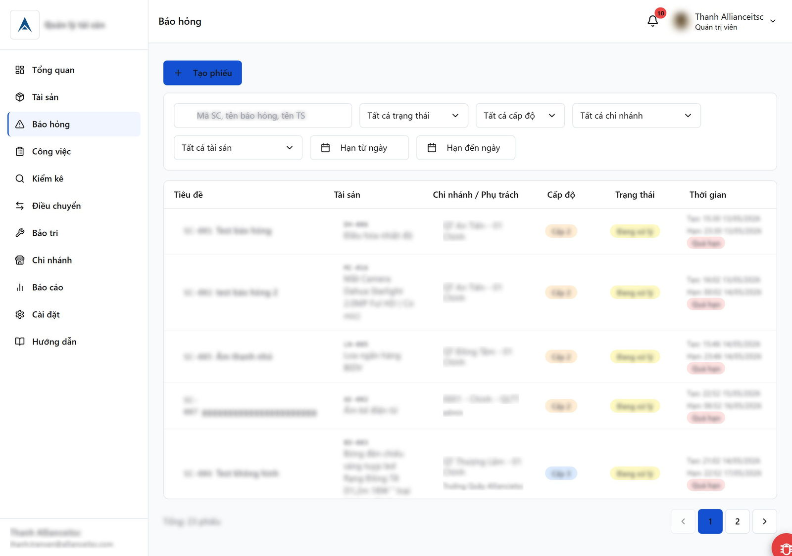
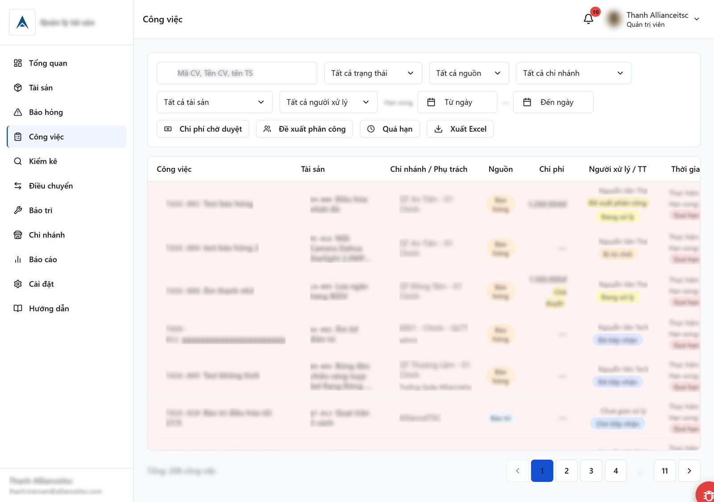
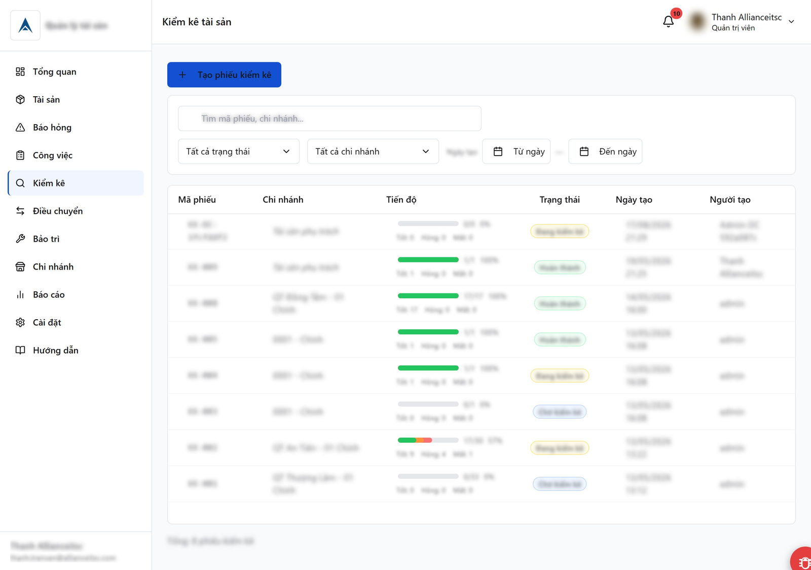
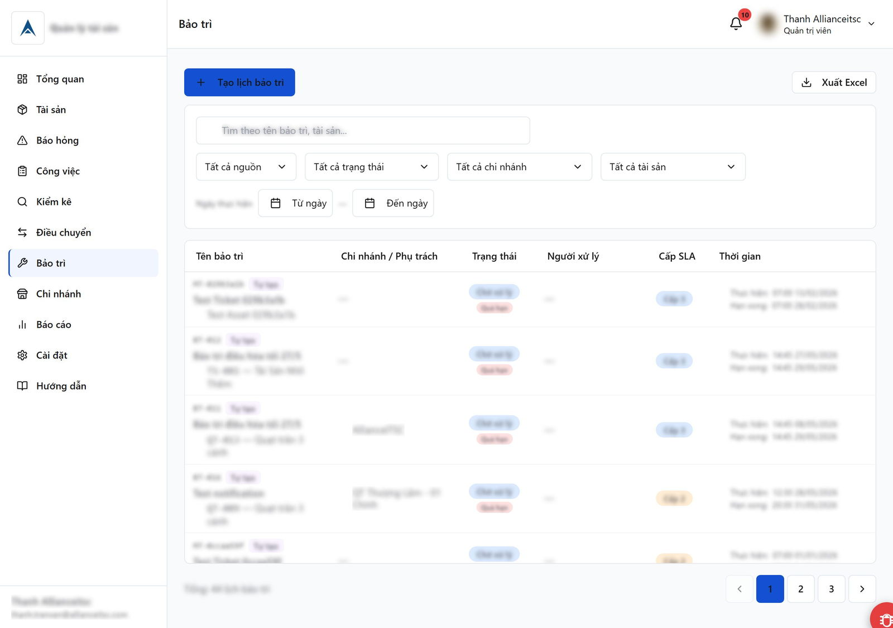
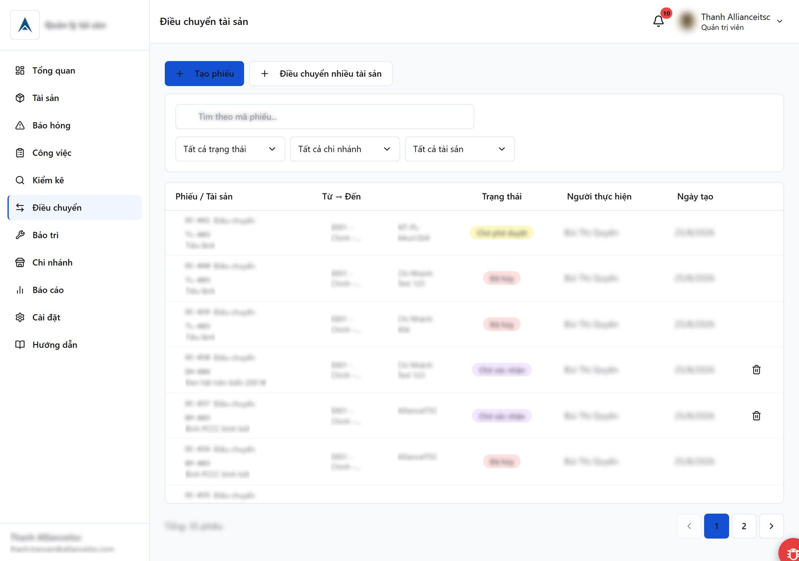
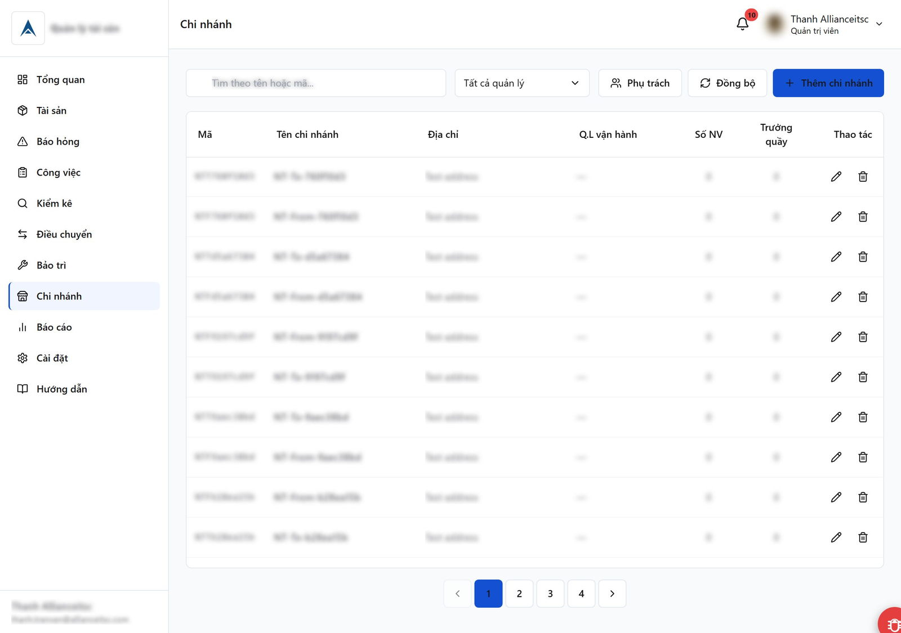
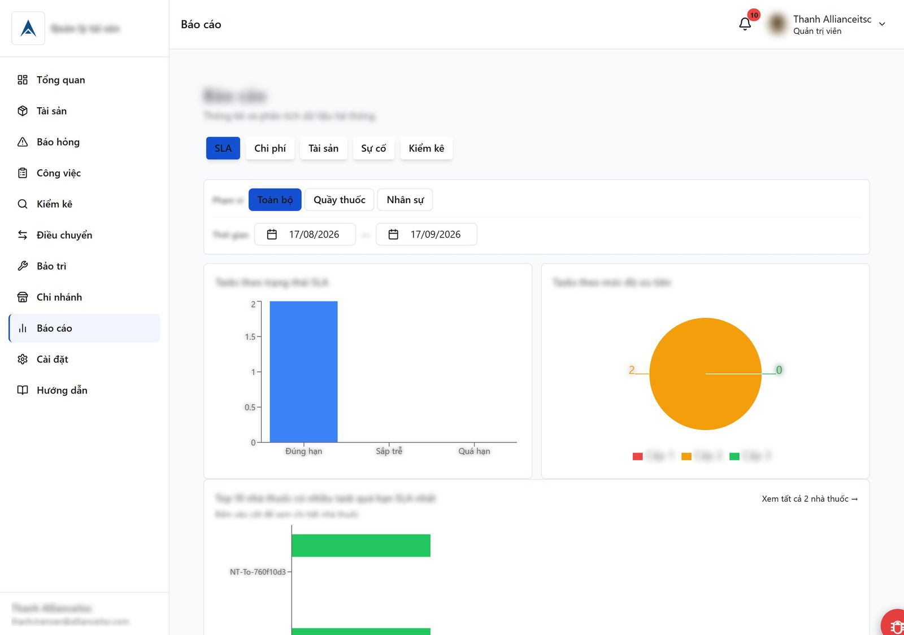
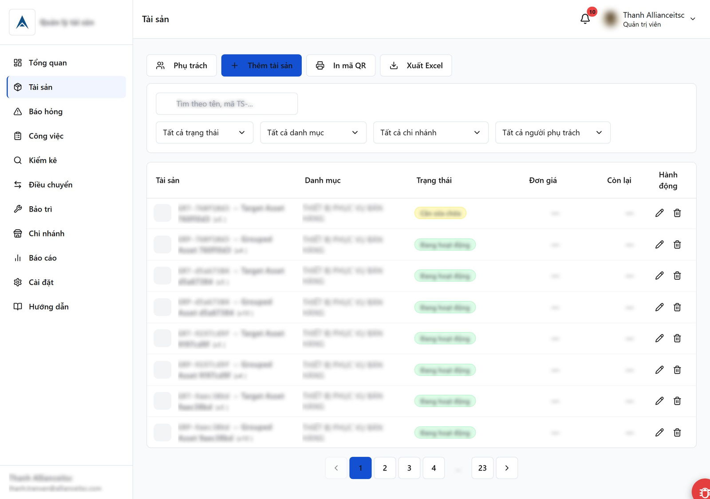

Monorepo
pnpm workspaces + Turborepo gom frontend, backend và shared types vào một repo. Type dùng chung giữa client và server nên đổi schema là compiler báo ngay ở cả hai đầu. CI/CD chạy trên Railway.
Hệ thống quản lý vòng đời tài sản — chuỗi nhà thuốc ~40 chi nhánh
Web app quản lý tài sản doanh nghiệp: vòng đời tài sản từ lúc tạo → khấu hao → thanh lý, báo cáo sự cố với SLA ba cấp, workflow phê duyệt chi phí và điều chuyển tài sản giữa các chi nhánh. Vai trò của tôi là thiết kế kiến trúc, viết spec và điều phối AI để implement — phần lớn code do AI sinh dưới sự dẫn dắt và review của tôi.
Vai trò
Architect · Spec · Review
Quy mô
~40 chi nhánh
Phân quyền
6 vai trò
Triển khai
Railway CI/CD









pnpm workspaces + Turborepo gom frontend, backend và shared types vào một repo. Type dùng chung giữa client và server nên đổi schema là compiler báo ngay ở cả hai đầu. CI/CD chạy trên Railway.
Socket.IO có middleware xác thực JWT — thông báo đẩy tức thì khi tài sản đổi trạng thái, kèm activity feed ghi lại toàn bộ thao tác để truy vết sau này.
Sáu vai trò (admin, ops manager, kế toán, nhân viên kho…) với permission guard đặt ở cả backend (middleware chặn request) và frontend (route guard + ẩn menu). Frontend chỉ lo trải nghiệm; backend mới là nơi thực sự chặn.
Cấu hình số giờ phản hồi và số giờ hoàn thành theo mức độ nghiêm trọng của sự cố. Hệ thống tự đánh dấu quá hạn và hiển thị badge trạng thái, không cần ai theo dõi thủ công.
Mỗi phiếu chi phí đi qua vòng đời nháp → chờ duyệt → duyệt/từ chối, với chuỗi người duyệt cấu hình riêng cho từng nhà thuốc.
Cloudflare R2 (tương thích S3) cho upload/xoá ảnh, có chuyển đổi HEIC (ảnh iPhone) và cron job dọn file mồ côi.